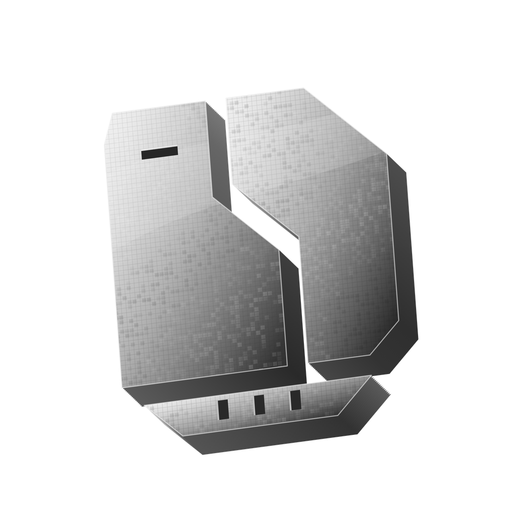

A PS4 that runs homebrew
You need a working homebrew environment. Firmware coverage is still being tested; neither a successful build nor the absence of a minimum-firmware gate proves compatibility with every console.

SSPIPS4 guideSUPER SIMPLE PACKAGE INSTALLER
A practical guide to searching, downloading and installing packages. All on your PS4.
Link. Search. Download. SSPI combines configurable package sources, Real-Debrid or TorBox, a persistent queue and PS4 installation services. A PC does not need to stay running.
What you'll needTHE BASICS
Download sspi5.10b.pkg from the 5.10 beta release. GitHub's source ZIP is source code, not an installable PS4 package.
You need a working homebrew environment. Firmware coverage is still being tested; neither a successful build nor the absence of a minimum-firmware gate proves compatibility with every console.
The beta includes SuperPSX 2.0 and installs its source descriptor on first launch. Existing choices to disable or remove it are preserved. Check the enabled sources before searching.
TorBox and Real-Debrid are the only supported download options for this PS4 beta. Bring your own account and API key. Host support and account limits still apply.
Use a browser on the same LAN as the PS4. Allow room for downloads, archive extraction and installed content. A wired console and Wi-Fi phone can pair if the network lets them reach each other.
The current build has worked well in a small group after several rounds of fixes. Host builds and local regression checks have passed. More consoles may still expose launch, extraction or installation failures. Treat this as a public test and report what happens on your setup.
Shell-resident operation depends on compatible GoldHEN process/plugin capabilities and the matching worker. If those are unavailable, keep SSPI open for the in-app paths. A firmware compatibility matrix has not yet been established.
FROM INSTALLATION TO YOUR FIRST QUEUE
Install sspi5.10b.pkg using your console's package installer, then launch SSPI. The bundled source is prepared on first launch.
Press OPTIONS and open Settings → Connections. Scan the QR with a phone on the same LAN. Add your Real-Debrid or TorBox key, choose the preferred service and save.
Open Package sources and confirm SuperPSX 2.0 is enabled. Other compatible .gssource packages can be added through the phone setup page.
Return to Search. Press × on the search field to enter a name or CUSA ID. Open the correct title and region, then inspect package types, versions and mirrors before queuing.
Switch to Downloads. Open Files on the selected game to see each package. A full download bar is not proof of installation; wait for the installation result and confirm the content on the PS4.
This checklist is saved in this browser. It does not configure your console.
CONFIGURE FROM YOUR OWN NETWORK
The QR opens SSPI's setup page on your console. Use the address shown by your PS4; it includes the current local IP and a pairing token. This documentation website is not the setup server.
In Link services, paste your own key and choose the preferred download service. Save before leaving the page. Both keys can remain stored while one service is active. A saved key does not confirm that a subscription is active or that a particular host is supported.
In Settings → Connections, select Real-Debrid or TorBox. Switching preserves the other saved key and applies to new downloads; it does not move a running transfer between services. Direct-link code remains present but is outside this beta's supported download options.
Keep SSPI open, rescan the current QR and check that the phone can reach the console. Guest-network isolation, a phone VPN or an old console IP can prevent access. Ethernet and Wi-Fi can be used together on the same reachable LAN.
The local page uses HTTP and an access token. Use a trusted LAN; do not forward its port to the internet. Never share the QR, full pairing URL, API keys or settings files in an issue report.
CATALOG CONNECTIONS
A .gssource is a source connector packaged as a ZIP. It describes where and how SSPI searches and resolves package information. It is not a game, a PKG or a service account.
The release includes the source descriptor, and its search and resolution requests use a JSON API through SSPI's engine. A successful source installation confirms that the connector was accepted; it does not guarantee that every catalog entry or host is currently available.
Open Connections → Package sources. Highlight a source and use the displayed action to enable or disable it. To add another, open the phone setup page and supply the actual .gssource download URL. A GitHub file-view page or website landing page is not the archive itself.
Source upgrades can repair result mapping without replacing the application. The current installer preserves an existing usable source if an upgrade fails. Disabling or removing a bundled source is remembered. Sources supplied separately should be intended for PS4 and the supported engine version.
The manifest identifies the source, version and engine. Recipe sources describe requests and result mapping; remote-API sources call a configured result service. SSPI validates the package layout and declared files. Valid metadata does not establish publisher trust or package compatibility.
See the source models and source package reader for the implementation.
FIND THE RIGHT PACKAGE
Search by title or CUSA ID. Opening a result resolves its available packages. Search and package resolution are separate steps, so a title may appear even when one of its download routes is unavailable.
Use the type tabs for All, Base, Updates, DLC and Backport. The selected package shows available version, size, required firmware, source and mirror information. Missing values remain unknown. A firmware number is not an application version.
| Control | Action |
|---|---|
| D-pad | Move focus; left/right changes the active filter where shown. |
| Cross | Open a title or queue the selected package. |
| Triangle | Show or hide the selected package's mirrors. |
| L2 / R2 | Host and update-version filters, as shown on screen. |
| Square | Queue the recommended selection. |
| Circle | Return to the previous screen. |
All source-provided hosts are visible. A listed host may still be unsupported by your selected service. Pick a usable mirror for the package you want; do not queue every mirror as a different update.
Recommendations depend on the source's metadata. Review the CUSA, region, package kind and update/backport choice before proceeding. An exact-region result is not silently replaced with another region.
FOLLOW EACH STAGE
Downloads are grouped by game. The selected game expands to show artwork and progress; other games remain compact. Open Files to inspect each base package, update, backport or DLC.
| State | What is happening |
|---|---|
| Queued / Resolving | Waiting for a dependency, source resolution or a usable service link. |
| Downloading | Transferring package data or archive volumes. |
| Extracting / Finalizing | Preparing, extracting or validating local files. |
| Installing | The console installation task is still being checked. |
| Installed | The installation path has reported completion. Confirm the content and version on the console. |
| Needs attention / Failed | Open Files for the package-level error. Recoverable files may remain available for retry. |
Focus the relevant game or package and follow the centered action row. The actions change with its state. Canceling a task, removing queue history and deleting downloaded storage are different operations.
The latest beta includes installed-content checks to reconcile stale BGFT counters and false stalls. A full transfer bar alone is still not installation proof. If the PS4 confirms completion while SSPI remains Installing or Failed, capture both states and the build ID before retrying.
A remaining patch integrity-verification failure path can leave the resident status at Installing. Report the exact system error and package combination rather than repeatedly starting duplicate tasks.
MATCH THE INSTALLED CONTENT
The main application. Match later packages to its title ID and intended release.
A patch for a compatible base. Check its application version separately from its firmware requirement.
A source-supplied compatibility variant. It can be an alternative to the regular update, not another mandatory step.
Requires the matching base and may have additional update or release requirements.
A shared CUSA ID and structurally valid file do not prove that every base/patch combination is compatible. Do not queue all update revisions, mirrors and backport variants as consecutive steps.
Checks use enabled sources and cached metadata. A newly published update can take time to appear. Missing version information or a source failure is not proof that a title is up to date.
Keep the exact hexadecimal code and the corresponding PS4 Notifications details. Record whether the error occurred before installation, during transfer, or after the system reported completion. Preserve recoverable package files until the task's ownership is resolved.
FROM VOLUMES TO INSTALLABLE FILES
Direct PKGs skip extraction. For supported RAR, multipart RAR and ZIP downloads, SSPI stages the archive data and extracts installable packages before handing them to the console.
Every required part must belong to the same archive set and finish downloading. A .part1.rar or numbered volume is not a standalone package. Missing, truncated or mismatched parts can prevent extraction even when the first volume is complete.
Large or solid archives take time on the PS4's HDD. Network bandwidth settings do not accelerate decompression. Unsupported archive features or a damaged upload may require a different mirror or a corrected set.
Failed installations can retain complete files. Do not manually delete staging data while a worker or system task may own it. Use the queue and Storage controls after work has finished or cancellation has been confirmed.
MANAGE SSPI FILES
Open Settings → Storage to inspect downloaded files and eligible leftovers. This is not a browser for the entire PS4 drive and does not uninstall installed titles.
Refresh the listing, select the file and follow the displayed delete and confirmation actions. Check its name and size first. Cleanup protects active work and recovery information; a file that appears unused can still belong to a pending install.
General → Clear removable history clears eligible queue entries. It does not mean that every downloaded file has been removed. Use PS4 system storage management to uninstall installed content.
Finish or cancel relevant pending/background jobs, wait for confirmation and refresh. If ownership cannot be confirmed, retain the files and report the task state. Do not delete journals or reset queue files to force an installation past an error.
MAKE THE INTERFACE YOURS
Settings → Appearance provides accent choices and built-in backgrounds. The phone setup page can also save appearance settings. Restore original charcoal to return to the plain background while keeping the chosen accent.
Built-in patterns provide the available background options. Arbitrary uploaded background images are not part of this beta's setup flow.
Settings → Sound has separate switches for background music and interface sounds, plus volume. The default is 35%, with music mixed below the effects. Left/right changes volume in 5% steps; zero mutes it. Preferences save automatically.
Navigation and completion cues are designed to stay subtle. Audio runs away from the rendering thread and is optional; failure to open an audio device should leave the application usable without sound.
DISCOVERY, DELIVERY AND INSTALLATION
Enabled sources return title records for your query. The app combines those results and keeps their source identity.
Opening a title produces package candidates: kind, title ID, version, region, host, link and any supplied size, firmware, archive or checksum information.
The selected Real-Debrid or TorBox account requests a usable download route. A source returning a host link is not the same as the provider accepting it.
The application or resident worker transfers the data, preserves progress and applies the configured bandwidth limit. The transfer path coalesces small reads with bounded buffers.
Archive sets are extracted and package structure, length and available identity/integrity information are checked. Missing expected metadata limits what can be verified.
BGFT and the package-specific installation paths register work, track progress and reconcile installed content. A task being accepted does not mean it has finished.
Search results, resolution data, eligible responses and artwork are cached to avoid repeating work. Source changes, expired links and provider failures can still need fresh requests. Caching does not guarantee that an old mirror remains available.
The bundled SuperPSX 2.0 connector uses JSON results. The codebase also retains compatibility engines for other source formats. Read the source layout to find the managed and native implementations.
MEASURE THE ACTUAL TRANSFER
Connection plans usually advertise Mbps; the download display uses MB/s. Divide by eight for the theoretical decimal equivalent, before protocol overhead, disk work and host limits.
Open Settings → General → Bandwidth limit. Use Unlimited when measuring the fastest available route. The old Parallel ranges setting is no longer the user-facing transfer control.
A 300 Mbps connection has a theoretical ceiling of 37.5 MB/s before overhead. SSPI cannot promise 30 MB/s for every host, provider route, console or disk. A steady 11 MB/s is also consistent with a 100 Mbps link, but that must be checked at the router or switch rather than assumed from the number alone.
Use Ethernet, the same large file, host and debrid service, with other disk/network work quiet. Record sustained speed after startup and the bandwidth setting. A console internet test is not a measurement of that specific download route.
An uncached file may need to reach TorBox before it can be delivered to the PS4. That wait is provider preparation, not console transfer speed. Unsupported hosts and account limits can still stop resolution. If a provider returns HTTP 429, wait for its retry window.
START WITH THE STAGE THAT FAILED
Open the individual package in Files and keep the exact error wording. Search, service unlocking, extraction and installation are different stages.
Confirm the installed SSPI package and the console's homebrew environment. Report the PS4 model, firmware, GoldHEN version and any system error. Older firmware coverage is still being established; do not treat the beta as universally compatible.
Keep SSPI open, rescan the current QR and check that the phone and console can reach each other. Disable guest isolation or a phone VPN if it blocks local access. Never post the full token-bearing URL publicly.
Check the source is enabled and its URL returns a real .gssource archive. Capture its version and the full transport or engine error. An HTTPS/module error occurs before package installation; it is not an archive failure. A website loading on your phone does not prove the PS4 transport works.
Try the exact CUSA ID and clear restrictive region, host or type filters. A source can be unavailable or omit metadata. Cached update checks can delay a new badge. Missing results do not prove that no update exists.
Check the active service, account access and host support. All mirrors remain visible even if a service cannot unlock them. Try a supported alternative. For TorBox, distinguish preparation from failure; repeated recreation of the same job can consume limits.
Record both the SSPI row and PS4 Notifications details, including the complete error code. Check title ID, base version and the selected update/backport. The beta reconciles stale counters, but a patch integrity-verification failure can still remain Installing. Preserve files while task ownership is unresolved and report the timeline.
Check that every volume is complete and belongs to the same set. Confirm free space for archive data and extracted packages. Missing parts, damaged uploads or unsupported archive features can require a corrected set or another mirror. Renaming a part file to .pkg does not convert it.
Use the speed guide, set the bandwidth limit to Unlimited and compare sustained speed on the same route. Include connection type, host, service, stage and free storage in the report.
QUICK REFERENCE
OPTIONS opens or closes Settings. L1/R1 switch main tabs or settings pages. Follow the bottom action row for the current screen.
| Page | Controls |
|---|---|
| General | Bandwidth limit, download statistics, focused-download graph, firmware hints and removable history. |
| Connections | Real-Debrid, TorBox, phone setup and enabled package sources. |
| Appearance | Accent and built-in background choices. |
| Storage | Downloaded files and eligible cleanup. |
| Sound | Music, interface sounds and volume. |
Runtime data remains under /data/GameSearch/, preserving the app's historical directory identity. Settings, credentials, sources, queue state, staging data and caches belong to that local workspace. Updating the same application does not require publishing or sharing these files.
The GitHub repository contains selected production source, manifests, notices and this public guide. SDKs, runtime dependencies, source descriptors and build outputs remain separate. A source ZIP is not an installable package or a complete build environment.
See the build requirements, license and third-party notices. Build artifacts belong under the development workspace's Build-Output directory.
HELP MAKE THE NEXT BUILD BETTER
5.10 is an early public beta. It has worked well for the initial testers after a number of fixes, but more hardware and package combinations will expose more bugs. Launch failures, extraction problems and installation errors are still possible.
The guide was updated on 9 September 2026 for the public beta. Read the release notes for the package download and checksum. Local build/test results do not establish universal firmware support, a fixed frame rate or a guaranteed download speed.
SSPI version and footer build ID: PS4 model / firmware / GoldHEN version: Worker status (if using background downloads): Connection: Ethernet or Wi-Fi Service / host (no keys): Source name and version: Title ID / installed base version: Update, backport or DLC version: Package type: direct PKG or archive set File size / free storage / bandwidth limit: Steps to reproduce: Stage that failed / full SSPI error: PS4 system status and error code: Expected result / actual result:
Remove keys, pairing tokens, signed URLs and private settings from screenshots and logs. When SSPI and the PS4 disagree, include both states. Reports that reproduce an issue help more than a summary saying it does not work.